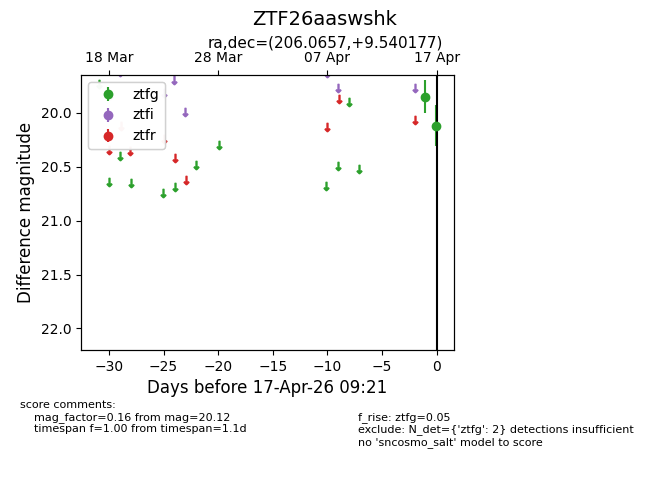
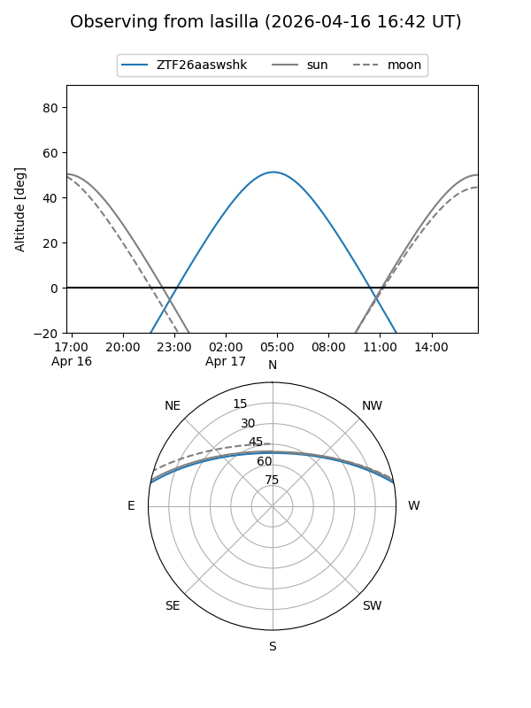
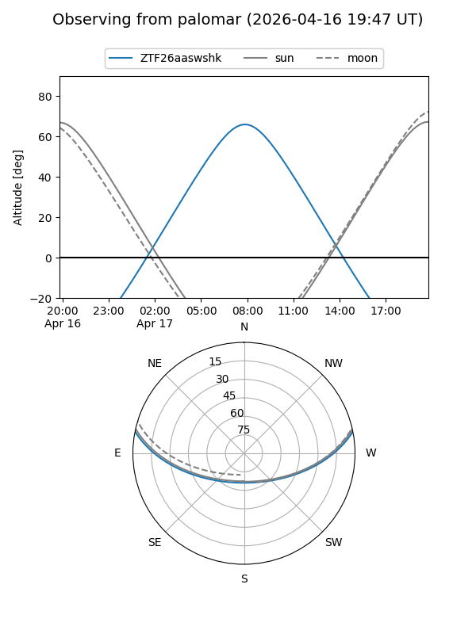
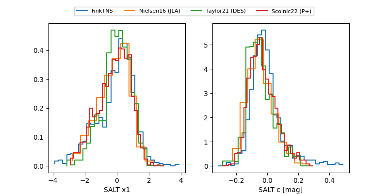

ZTF26aaswshk
Target ZTF26aaswshk at 2026-04-17 09:27
Aliases and brokers:
FINK: link
Lasair: link
ALeRCE: link
alt names
ZTF26aaswshk (ztf,fink_ztf)
Coordinates:
equatorial (ra, dec) = 206.0657,+9.54018
equatorial (HMS+DMS) = 13:44:15.77,+09:32:24.64
galactic (l, b) = (340.7483,+68.44145)
Flags:
Photometry:
last ztfg=20.12
2 ztfg detections
Lightcurve

Visibility


Additional plots
